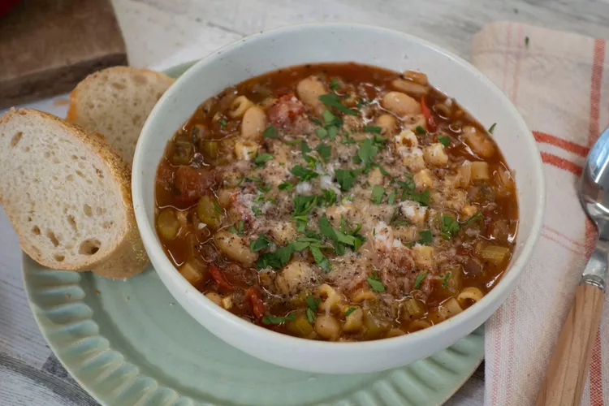

Pasta e Fagioli (Pasta and Beans)

Pasta fagioli (or pasta e fagioli), which means "pasta and beans," is a traditional Italian soup.
It consists of small noodles (such as ditalini or macaroni) and cannellini beans in a seasoned tomato broth.
Ingredients
- Oil: This pasta fagioli recipe starts with cooking an onion in olive oil.
- Vegetables: You'll need an onion, celery, and a can of cannellini beans.
- Seasonings and herbs: The flavorful soup is seasoned with fresh garlic,
parsley, Italian seasoning, crushed red pepper flakes, and salt.
- Broth: Use store-bought or homemade chicken broth.
- Tomatoes: You'll need fresh chopped tomatoes and a can of tomato sauce.
- Pasta: Make this traditional pasta fagioli with ditalini noodles (or any noodle you like).
Steps
- Heat olive oil in a large saucepan over medium heat. Add onion, celery,
garlic, parsley, Italian seasoning, pepper flakes, and salt; cook and
stir until onion is translucent, about 5 minutes. Stir in chicken broth,
tomato sauce, and tomatoes. Reduce the heat to low and simmer for 15 to 20 minutes.
- Add pasta and cook until tender, about 10 minutes.
- Stir in undrained beans and cook until heated through, 3 to 4 minutes.